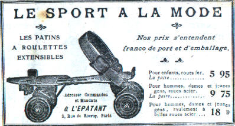
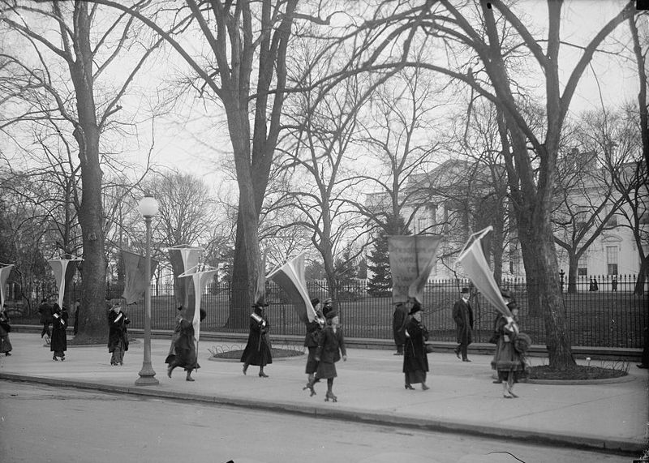
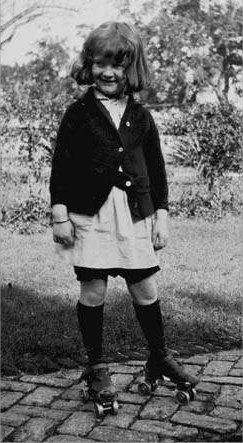
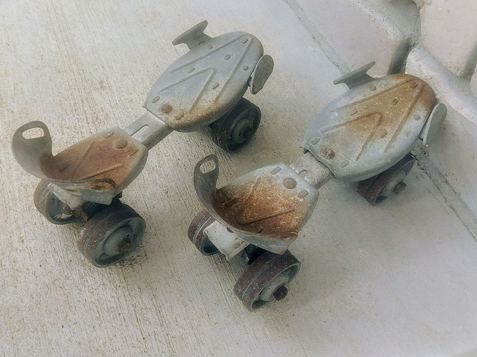
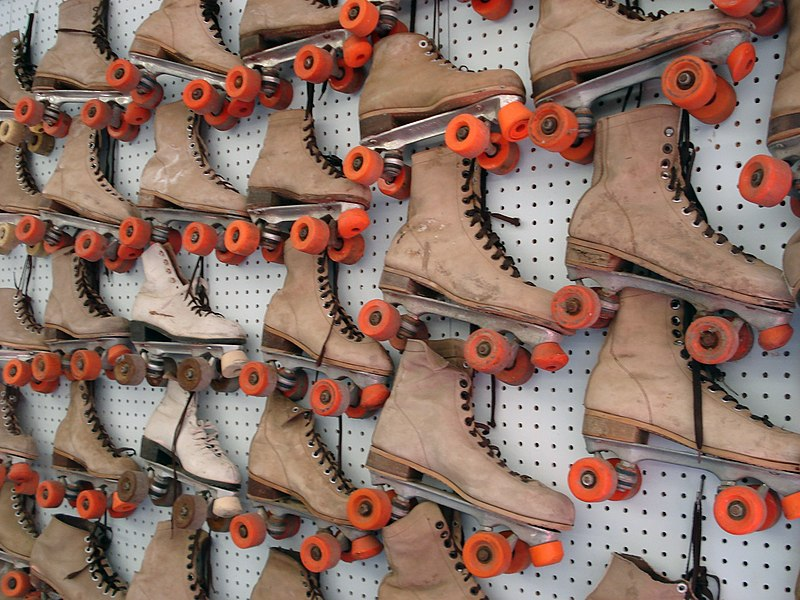

Roller skates, are shoes or bindings that fit onto shoes that are worn to enable the wearer to roll along on wheels. The first roller skate was an inline skate design, effectively an ice skate with wheels replacing the blade. Later the "quad skate" style became more popular, consisting of four wheels arranged in the same configuration as a typical car.

Roller skating is a hobby, sport, and mode of transportation using roller skates.

An advertisement for an early 20th-century model which fit over regular shoes

Young woman roller skating beside a group of women's suffragists at the White House, 1917

Girl on roller skates, 1921

Roller skates of a design common in the 1960s

Skates at Paul Bunyan Land, Brainerd, Minnesota